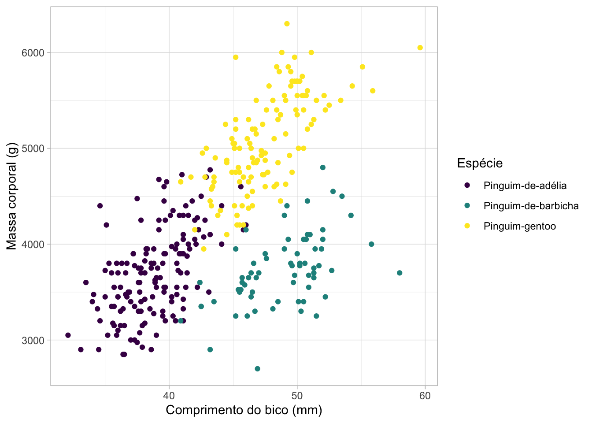

Aula 4
Inline code/Código na linha
Esse relatório foi elaborado utilizando os dados de pinguins, que apresenta 344 pinguins e 8 variáveis. Esses pinguins são de 3 ilhas: Torgersen, Biscoe e Dream. As espécies coletadas são: Pinguim-de-adélia, Pinguim-gentoo e Pinguim-de-barbicha. Os dados foram coletados entre os anos 2007 e 2009. A média massa corporal dos pinguins encontrados foi de 4202 g.
Imagem
Na Figura 1, podemos ver que …. Já na Tabela 1, ….
Na Seção 1, podemos ver que …
Tabela
Tabela com knitr
| Espécie | Ilha | Quantidade de pinguins |
|---|---|---|
| Pinguim-de-adélia | Biscoe | 44 |
| Pinguim-de-adélia | Dream | 56 |
| Pinguim-de-adélia | Torgersen | 52 |
| Pinguim-de-barbicha | Dream | 68 |
| Pinguim-gentoo | Biscoe | 124 |
Tabela com flextable
especie | ilha | n |
|---|---|---|
Pinguim-de-adélia | Biscoe | 44 |
Pinguim-de-adélia | Dream | 56 |
Pinguim-de-adélia | Torgersen | 52 |
Pinguim-de-barbicha | Dream | 68 |
Pinguim-gentoo | Biscoe | 124 |
Equações
Ao realizar a conta \(1 + 1 = 2\), descubro que ….
\[{\text{Média}=\frac {a_{1}+a_{2}+\cdots +a_{n}}{n}}\]
Adicionando referências
Nesta análise, utilizamos dados de pinguins (GORMAN; WILLIAMS; FRASER, 2014) disponibilizados no pacote palmerpenguins e traduzidos no pacote dados (HORST; HILL; GORMAN, 2022; QUIROGA et al., 2024). As análises foram feitas usando o R (R CORE TEAM, 2022). Segundo WICKHAM et al. (2019), o pacote tidyverse ..
Referências
ESTEVES, F. de A. Fundamentos de limnologia. [s.l.] Interciência, 1998.
GORMAN, K. B.; WILLIAMS, T. D.; FRASER, W. R. Ecological Sexual Dimorphism and Environmental Variability Within a Community of Antarctic Penguins (Genus Pygoscelis). PLoS ONE, v. 9, n. 3, p. e90081, 5 mar. 2014. Disponível em: <http://dx.doi.org/10.1371/journal.pone.0090081>.
HORST, A.; HILL, A.; GORMAN, K. palmerpenguins: Palmer Archipelago (Antarctica) Penguin Data. [s.l: s.n.]
QUIROGA, R.; MILZ, B.; MORTARA, S.; SÁNCHEZ-TAPIA, A.; TAPIA SILVA, A. A.; MAURER COSTA, B.; PRADO, J.; HIROTA, R.; AMORIM, W.; RODRIGUES NUNES, E.; SCOPINHO, E. dados: Translate Datasets to Portuguese. [s.l: s.n.]
R CORE TEAM. R: A Language and Environment for Statistical Computing. Vienna, Austria: R Foundation for Statistical Computing, 2022.
SEADE. Seade Censo 2022 - Censo Demográfico 2022 ─ população. [s.l: s.n.]. Disponível em: <https://repositorio.seade.gov.br/dataset/seade-censo-2022/resource/2ffdf346-60ea-42d5-b687-a9666087834c>. Acesso em: 31 jan. 2024.
WICKHAM, H.; AVERICK, M.; BRYAN, J.; CHANG, W.; MCGOWAN, L. D.; FRANÇOIS, R.; GROLEMUND, G.; HAYES, A.; HENRY, L.; HESTER, J.; KUHN, M.; PEDERSEN, T. L.; MILLER, E.; BACHE, S. M.; MÜLLER, K.; OOMS, J.; ROBINSON, D.; SEIDEL, D. P.; SPINU, V.; TAKAHASHI, K.; VAUGHAN, D.; WILKE, C.; WOO, K.; YUTANI, H. Welcome to the tidyverse. Journal of Open Source Software, v. 4, n. 43, p. 1686, 2019.